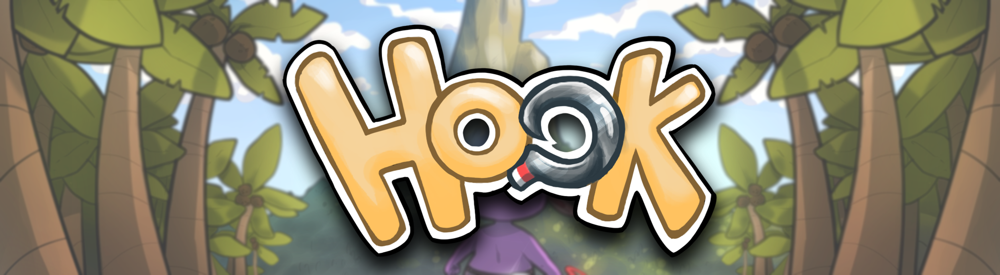

Hook
Description
Marion Betremieux - Game Artist
Thomas Depraz-Depland - Game Designer - Lead Programmer
Léo Gosselet - Game Artist
Timothé Huerre - Game Designer - Programmer
Lea Margiotta - Lead Game Artist
Marine Mazurier - Game Artist
Mathieu Van Cappellen - Game Designer - Sound Designer
Context
This was my second project using Unity.
We had to create a zelda inspired action adventure game again
using pixel art graphics. Our group was composed of 4 game artists
and 3 game designers. We had some guidelines to create the gameplay
mechanics, there had to be 3 different enemies, puzzles, and a boss.
Again we were free to create the story and the universe of the game.
Unfortunately, we went on lockdown right at the end of the
pre-production of the game, and it was quite hard to adapt
About Hook
Hook is a zelda-like game where you play as an Axolotl defending
his village against crabs.
You have to save the villagers kidnapped by the crabs,
and defeat their boss.
With the help of your grappling hook you have to solve puzzles
and slay the crabs standing in your way. You will meet a lot of
characters which will help you during your quest.
My Work
On this project I was Lead Game Programmer, meaning I had to write
documentation about programming nomenclature, the Git workflow etc…
I also had to verify my colleagues code and help them whenever I could.
I wrote parts of the Game Design Document, especially the technical
parts that were going to be used later on, during development.
I worked a bit on the player controller especially on the grappling
hook, which was quite a challenging mechanic to develop. I also worked
on the enemies of the game, except the boss. I developed a lot of the
interactable objects used to create puzzles, such as pressure plates,
doors, crates, rafts etc…
Conclusion
This project was really ambitious and we had a hard time wrapping it up especially since we were on lockdown and unable to see each other. Though, I am very pleased with the result. I learned a lot being the lead programmer on this project. At times, it was really hard to take on my responsibilities. My knowledge of Unity and C# programming grew even more and I am really proud of what we managed to do as a team.